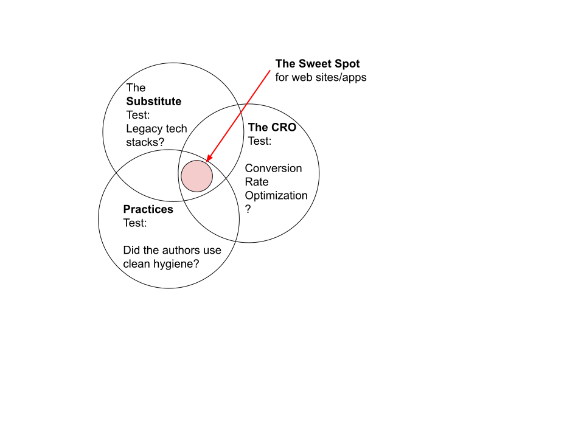

The Sweet Spot
2 line Summary:
Framework wars are obsolete, even if they are a long way from being over.
What's left is delivering results. Whodathunkit?
TLDR, as follows below:
I wrote this as my lead article. Somehow, the tone just didn't work.

I'm going to let article remain as fluff, at least, for the moment. Article continues, below:
Here's how we may have reached the sweet spot. Our world as web developers is getting waay better. That may be the last thing we ever notice, because its all TLDR. The short version of the story makes it seem like things haven't changed at all.
Weird, but wonderful. How to take advantage?
In search of that "framework"?
The "framework" or platform is a decades old idea to solve a decades old problem. The browser standard was immature, and the DOM - and even JS, a little bit, sucked. Enter the "framework" to solve the problem.
Except, it wasn't a problem. It was a set of - ahem - opportunities? Is that the positive spin? Different frameworks evolved, year after year, to address each opportunity, in different ways. Soon it became "I'm an Angular developer" or "I'm a React developer" or Drupal, or ....
A framework included all that stuff that the language and the browser standard didn't have. So now we get to work as a tribe, be buddies, share an ecosystem - go DX!
That's why "better" isn't necessarily better.

Abusing a racist metaphor from the American West - "Cowboys and Indians" has made up movie plots, childhood games, and more. Let's try it on for it's visceral impact:
Framework wars depend on keeping our guns loaded and sticking together. Framework growth depends on keeping the browser standard immature and JS and the DOM sucky. We stick with the framework's adaptations that we know, and we code quickly, as a result.
Cowboys and Indians may be out of date and even distasteful as a metaphor, but competition between frameworks is quite the contemporary reality.
Speed and efficiency comes from knowing the lingo of our "side", not always the relative merits of the development platform. That's an important distinction.
So that's the first pattern we look to exploit - providing whatever we need within a singular ecosystem. The rest of this story is about the unexpected disappearance of the very problem that frameworks fix.
But wait, there's more
You might be eager to point out that all is not Cowboys and Indians - sometimes it's Urban vs Rural, or even East vs West. Geographical, not so much tribal.
Hey! That's me! I spent decades coding almost everything exclusively on the back end, in Java servers. Or others did the same, in PHP or Python or Ruby. In this world, there was no client side code, or at least not much. We kinda liked it, that way.
I bring it up here only to illustrate a natural preference. When my first concern is maintaining my current routine, rather than the abstraction of a better experience for my customer!

"Better" in the context of this article does not include the objective of "not having to learn client side, rather than server side processing". Nor does it include the popular convenience of protecting developers from having to learn new HTML standards. WebAppWriter is all about identifying the better experience for the customer, as a baseline.
If that means I gotta learn something new, so be it. Too bad for me. Life goes on.
As a side note only - standards are a finite set that I need to learn, if I want to keep up with the browser and JS/TS as a language. It only feels infinite, sometimes.
So that's another feature of the sweet spot - it needs to live where it serves the customer and even the content provider best. Super fast, responsive experiences. Not what serves the developer best. "Heresy", in some circles.
Woops, somebody improved DOM and JS
Sigh. So much emotion gets in the way when I'm forced to do things differently. Perhaps I'll just resist?
Look, I'm picking on React here, as a point of comparison. It could just as easily be Gatsby or VuePress or Laravel/PHP or Rails or even Polymer. We were all doing our best to get around the limitations of the browser and the DOM.
In the unfortunate case of the React ecosystem, VDOM and JSX taught the browser standard folks how to implement nearly identical functionality in the standard browser. But now, if I'm a React dev, suddenly I'm writing legacy code? That doesn't feel right.
But it is that way. And it's not just React. Here's a modest sampling:
- CSS variables vs scss
- file based SSGs vs SQL based Wordpress, Drupal, and the like
- fetch vs axios
- CSS grid vs Bootstrap or many other
- too many others to mention here
The resistance is palpable. Why ask me to learn something new, when I could already be done if I use familiar legacy stacks? But that's exactly what is happening, here. This is why "better" doesn't feel better, not even slightly.
So these improvements lead us to the next section: When to adopt which stacks?
Conclusion: 3 very exact filters, to the rescue
We need a quick set of logic gates or filters to test, in the face of what feels like an infinite array of options. Arguments or discussions between tribes isn't going to feed anything but my fragile, overblown ego.
- Substitutions: (True/False) Has my favorite stack(s) become a legacy substitute for something that is now in the DOM or the JS/TS language? If so, migrate immediately, for that one piece, anyway. This is a pretty easy, black and white test.
- Practices: For stacks which are not browser or language standards. Such as, which is better? Webpack or Rollup? Lit or FAST? These tests are never definitive, because the answers differ depending on context, and even which version of which stack on which day. So we still test for these, and we prepare ourselves for switching out stacks when our development context demands it. Clean hygiene is the logic gate, here. Sometimes, as viewed through a lens such as Lighthouse
- CRO: WUT? Since when is CRO even an issue for a dev? Isn't that on the business side? CRO is about results. In what other world than web development, do results not even enter into the discussion? A strong signal on just how distracted we are by DX. Results is all that matters in a mature business context.
The proposal here is that these 3 tests give us instantaneous answers, even if they are always changing.
So now we still have some grey areas in the form of contextual switches, but Little Red Ridng Hood now has a safe route to grandma's house, and it's not just "which tribe am I in?" any more.

Downstream takeaway: OWC
If you were autistic like me, you might be exasperated by that human thing about following a large tribe. I don't read social signals very well, so I tend to rely less on feelings, more on my inadequate versions of pattern matching, like the above 3 logic gates. For some of us, compensating is the best we can come up with.
So let's assume that you're not autistic. You do better with group heuristics!
You might ask "Which group or framework?" rather than "Which collection of stacks?".
For this I would offer a terrific group of devs which hues well to the first two logic gates, and builds what others might consume as "frameworks" for daily use. Even if they themselves would never ever use that term - because they are at least notionally anti-framework.
So OWC is the main takeaway of webAppWriter. If I do it right, it will even look easy to do, on static sites - thanks to 11ty and now, Rocket
A different downstream takeaway: Yax
As if to illustrate that "framework free" comes in multiple flavors and perspectives, Yax seems to begin with the quite literal interpretation.
Daniel Kehoe was a thought leader in previous tribes - er uh, frameworks - and observes that current toolsets allow for absolute freedom from build tools, because of advancments in three specific areas mean I can now consume elements without even creating them!
Lifting these directly from this article:
- ES6 Modules: JavaScript ES6 can support import modules, which are also supported by browsers.
- Module CDNs: JavaScript modules can now be downloaded from third-party content delivery networks (CDNs)
- Custom HTML elements: Developers can now create custom HTML tags, via Web Components.
I offer this listing as an excellent marker of how far things have gone. Daniel's position is correct - one could develop without even build tools!
It is also true that no-one in my world would ever make it past their first day without engaging in the sport of getting into the weeds of WCs, complete with build tools, et al. It is meaninful that one could actually work, unencumbered by all that extra power.
So the takeaway here is that Daniel's approach is a great marker for how much better things have become.
About letting Rocket get you started
Fair warning: I have personal issues with the questionable naming of "static" sites in current times. A service worker, and too many other aspects to list make even 'static' sites kinda app-like. Perhaps all sites are app-ish, now? A discussion for another day.
If you're focusing on a 'static' site, then SSGs generally, and more specifically - Rocket as an 11ty implementation might really capture your imagination. Or, at least, if you learn what it can do for you.
What you might like about Rocket, once it is offically released, is that it's built from browser-standard dumb stuff by hard-core practitioners of building from browser-standard dumb stuff. And it's built from standard parts like 11ty by devs who are creative about not re-inventing or using a legacy tool once a standard matures and is easily adopted.
Much as I'd like to drag you through a word salad extolling the 100 ways to illustrate where Rocket does that for you, how about, not?
Rocket lets you focus on the your content (or your app) as React or Wordpress or other great ecosystems do. To validate, search for your area of interest around 11ty, Markup, buildless web, Web Components, Lit, and all the other pieces that Rocket automates for you. Or even, just browse through the code for yourself.

I'll even go one further. If it's just static sites, you don't even have to be a much of a dev. Only git, npm, Markdown skills are required - that could be enough for a Rocket site. But that's a topic for another day.
CRO vs Good Feelings
It does feel good to be creative and put out helpful content. But, as developers - should we stop there?
If good feelings are enough for you, then the above Sweet Spot diagram doesn't apply to you. 2 out of 3 is fine, for you.
But I've been tending to my own good feelings thing for a couple decades, authoring lots of content. All that content hasn't served a commercial purpose. It's long past time to focus on results, not just going through the motions. And I'm not the only one.
Results do matter. CRO, or anything better, is how to get there.
CRO is well worn path, the tools are popular and free, and Rocket integrates them easily.
So I want to document some of that progress here, to compare notes with others and invite future contracts.
If it slows me down, then I'm doing something wrong. More will be revealed.
Fins (Rocket Themes)
When Rocket releases later this year, you might conclude that it's a bit like what Henry Ford promised about the Model T "Any color you want, as long as it's black".
You can customize it, sure, but it's not a trivial affair like dropping in WordPress or Drupal themes would be.
So I started coding up 18 or so Rocket themes. Take a walk through...
errata: Hey, if you suggest a more well known and visceral metaphor than the distasteful "Cowboys and Indians", I'm all ears